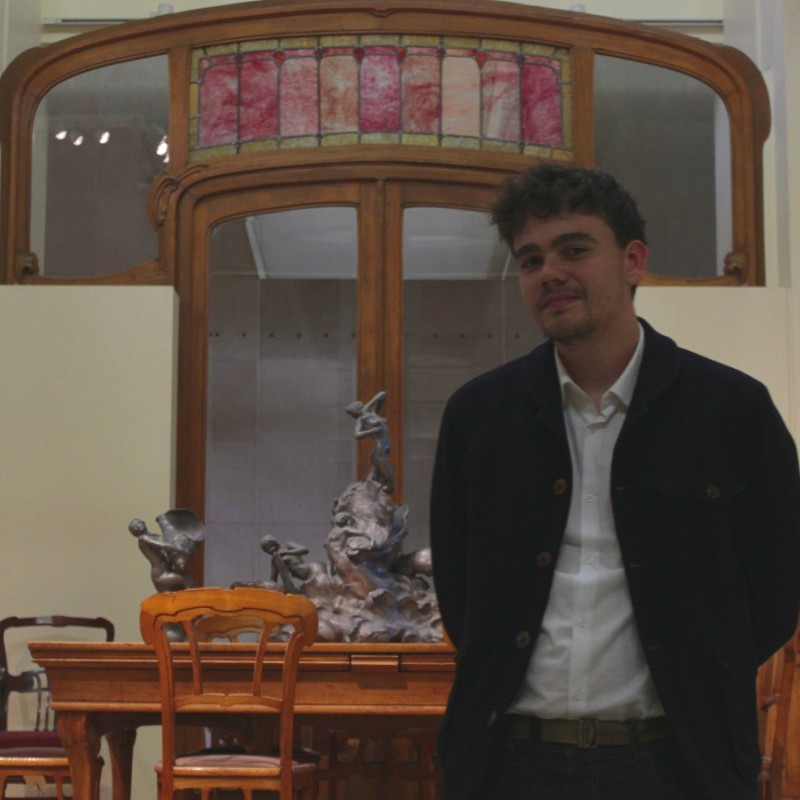

A propos
Depuis janvier 2024, je suis doctorant CIFRE en cryptographie sous la direction de Louis Goubin (UVSQ) et de Benoit Cogliati (Thales DIS). Je m'interesse principalement aux algorithmes de signatures post-quantique et à leur sécurité dans le modèle de la boite grise et de la boite blanche.
En parralèlle de mes travaux de recherche, je donnes des Travaux Dirigés à l'Université de Versailles et des colles en MPSI à Pontoise. J'ai principalement créer ce site pour y déposer des documents utiles à mes étudiants.
Parcours
- 2024: Début de ma thèse.
- 2022-2023: Master 2 Algèbre appliquée et cryptographie. Versailles
- 2021-2022: Master 2 Préparation à l'agrégation de mathématiques, Admis. Grenoble
- 2019-2021: Magistère de mathématiques, L3-M1 Grenoble
- 2017-2019: MPSI/MP. Lycée Camille Pissaro Pontoise
Contacts
- Mon linkedin: Ici
- Mon mail pro: paco.azevedo-oliveira@thalesgroup.com